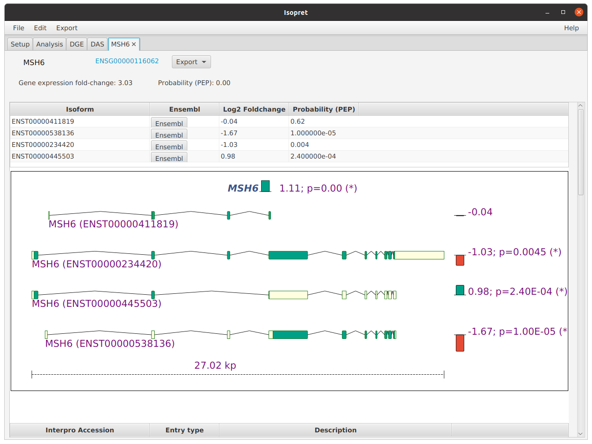

Output
Directly after finishing the analysis, Isopret shows the Analysis (Overview) tab, with a table with
the counts of differentially expressed and differentially spliced genes (from the HBA-DEALS analysis)
and the counts of Gene Ontology (GO) terms found to be significantly
overrepresented among the differentially expressed genes (DGE) and the differentially alternatively spliced
isoforms (DAS).
The lower table shows each gene with at least one count in the RNA-seq experiment, together with the posterior error probability (PEP) for differential expression and the lowest PEP for differential proportionailty of any isoform. Genes or isoforms whose PEP is less than the threshold determined by the desired false discovery rate (FDR) are highlighted in color.

Gene view
If you click on the Visualize button for a gene in the Analysis pane, Isopret will open a tab with visualizations
and analysis results for that gene. The tab has three parts -- isoforms, protein domains, and GO analysis.
The isoform section shows the structure of each isoform that has at least one read in the RNA-seq data.

The protein domain section shows the protein domains (using data from InterPro) of each of the isoforms.

Finally, the GO section lists all of the GO annotations associated with the gene and shows the inferred isoform level annotations. GO terms that are significant for either expression or splicing at the experiment level are shown at the top of the table and highlighted green.

Gene Ontology view
The DGE (differential gene expression) and DAS (differential alternative splicing) tabs show the GO terms found to be overrepresented for expression or splicing. The table shows a list of the terms and the corresponding p-values.

Clicking on the Compare DGE & DAS button will open a dialog that shows the negative logarithm of the p-values
of GO terms to compare results for expression and splicing.


Clicking on the Export button next to a GO term will show summaries for each gene that is annotated to the GO term and is also differentially expressed (for DGE) or spliced (for DAS). This generates an HTML page that can be used to explore the genes associated with the GO term together with their corresponding patterns of differential expression and splicing. Note that the output is restricted to the first 100 genes to limit the size of the resulting HTML page.